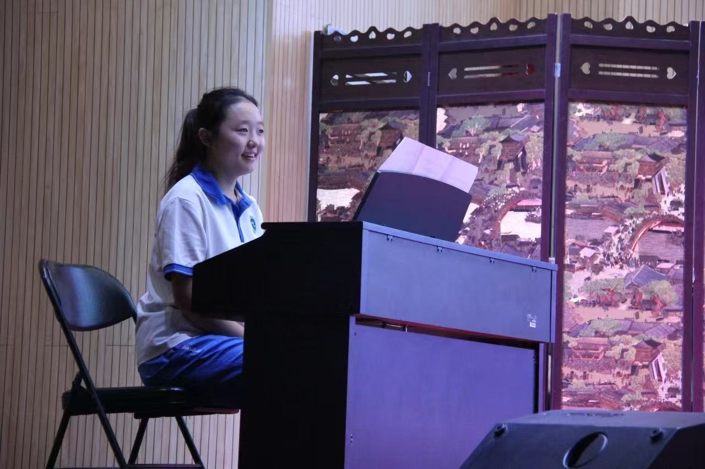
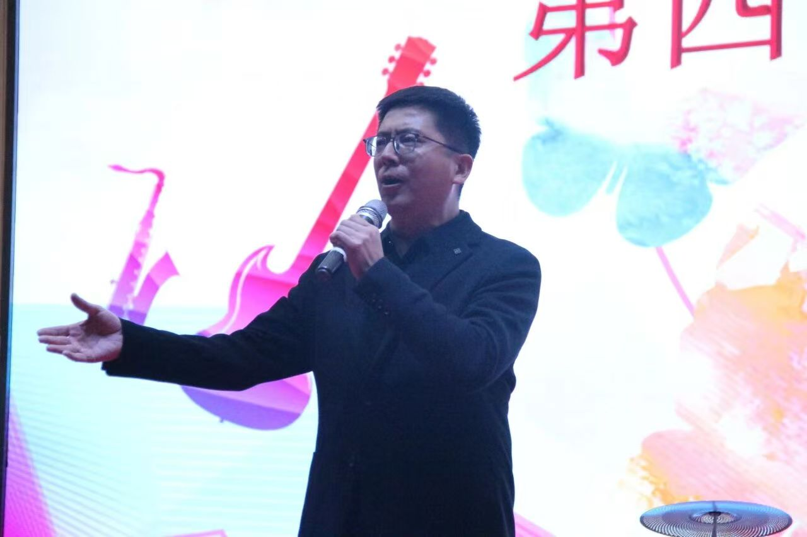
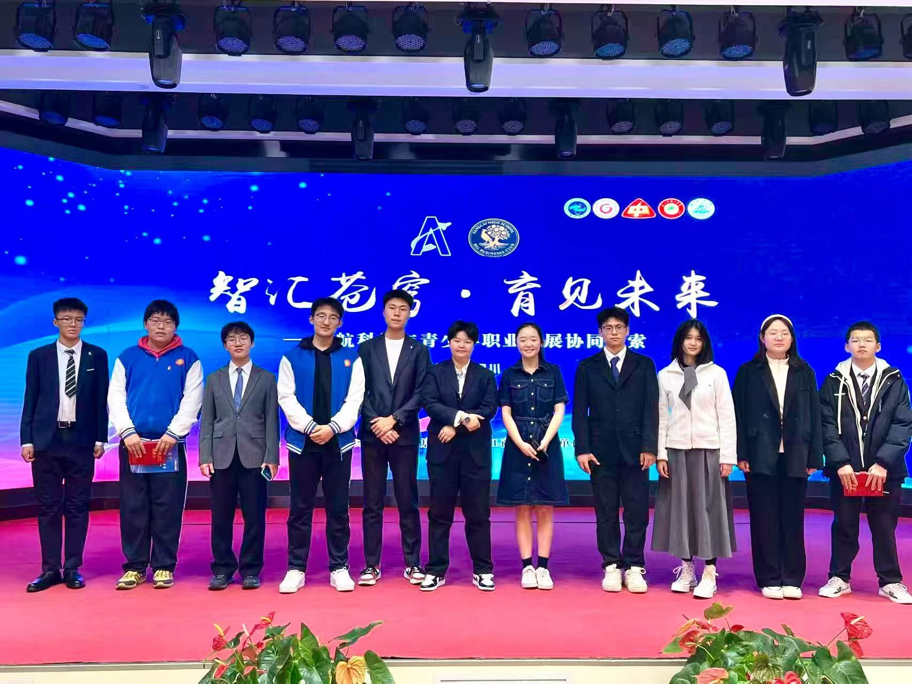
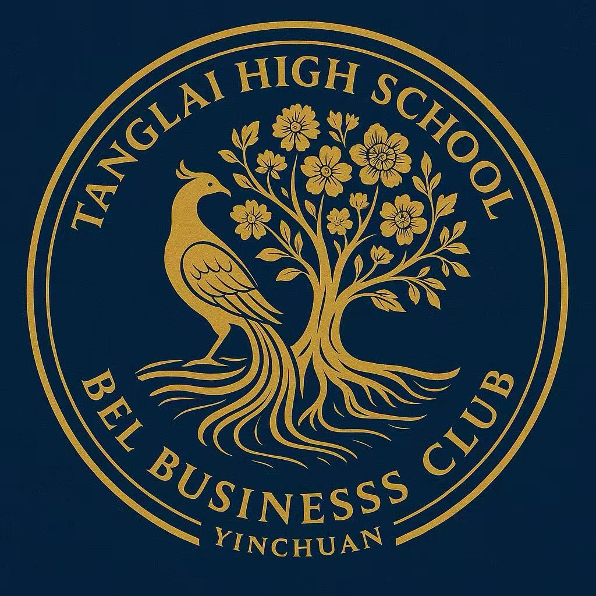
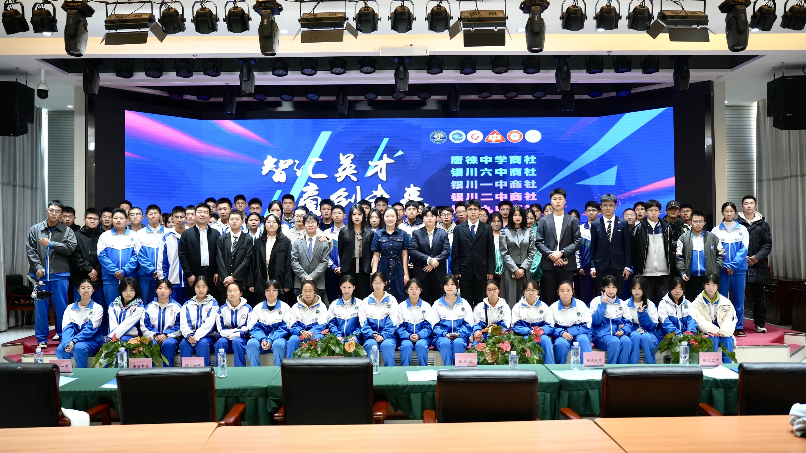
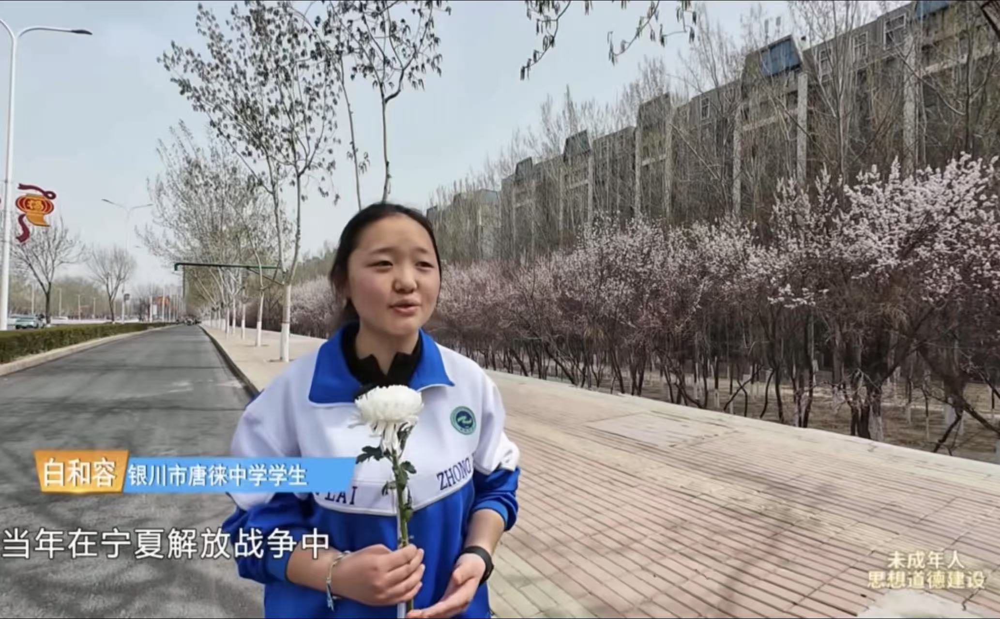
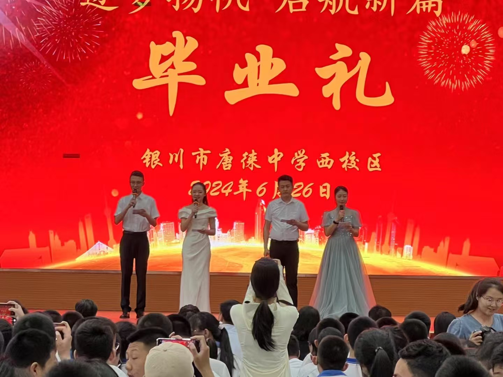
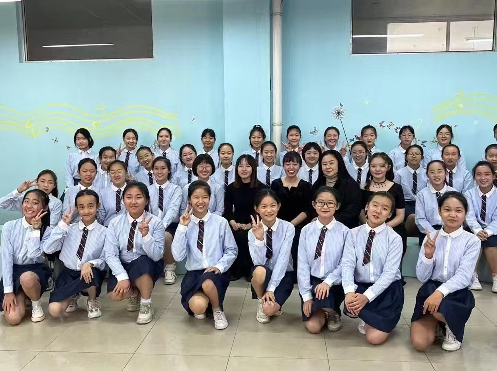

NOVEMBER 2024
Piano at the Campus Singing Competition
Herong accompanied the school’s Director of Student Affairs at the piano during the campus singing competition.


TANGLAI MIDDLE SCHOOL · YINCHUAN
Music, interviews, student initiatives and hosting.


FOUNDER & PRESIDENT
Herong founded the BEL Business Club at Tanglai Middle School, the first business club in the school’s history, and served as its founding president. She and the club prepared an interdisciplinary programme for students from several schools, connecting economic inquiry with aviation, technology and music.
Working with the school’s Youth League committee, she coordinated school–bureau contacts and helped bring together clubs from seven schools. During the 9 November gathering, she also introduced the Back to BACH Project and launched its Yinchuan chapter.

9 NOVEMBER 2025
Herong and the BEL Business Club helped prepare a day of music, aviation and student exchange with the school’s Youth League committee and the Ningxia Air Traffic Management Bureau.
Explore the 9 November programme ↗Herong continues to serve as a piano accompanist for her school choir.
When she could not find a piano accompaniment score online that matched the choir’s key and vocal phrasing, Herong arranged the piano part herself for her class’s performance of The Pearl of the Orient and accompanied the choir at the piano. Her class received Second Prize in the school choir competition.

APRIL 2025
In April 2025, Herong represented her school in a television interview during a Qingming memorial walk honoring those who gave their lives in service.
NOVEMBER 2024
Herong accompanied the school’s Director of Student Affairs at the piano during the campus singing competition.


26 JUNE 2024
Herong co-hosted the Grade 9 graduation ceremony at Tanglai Middle School’s West Campus.

